Farer
Farer er ting som sannsynligvis vil skade spillerpersonene eller det de bryr seg om. Det finnes to grunnleggende typer farer:
Risikoer er farer i omgivelsene, som feller, forrædersk terreng eller vær.
Monstre er aktive farer, som regel noe med en hensikt; motstandere som spillerpersonene kan kjempe mot (eller slå tilbake).
Spillerpersonene møter som regel farer når de er på ekspedisjon, eller når ting går galt og en fare dukker opp i bygda.
Til syvende og sist er de bare elementer i fiksjonen: du rammer inn en scene som inneholder en fare (eller introduserer en i en scene), du beskriver situasjonen, du gjør et trekk med faren, og du spør «hva gjør dere?» Så går det videre derfra.
Som alle andre elementer i fiksjonen kan farer improviseres. Mye av dette kapitlet handler likevel om å forberede farer på forhånd. Den siste delen av kapitlet handler om å lede kamper.
Farer kontra trusler
Farer kan også være trusler (se Trusler), men de trenger ikke være det. Trusler er vedvarende problemer, ting som kommer tilbake og hjemsøker spillerpersonene senere; de er kanskje ikke farlige, men de er alltid brysomme. Farer er umiddelbare problemer: ting som kan skade eller hindre spillerpersonene i en scene, her og nå.
Til syvende og sist er forskjellen hva du forbereder. Forberedelsene dine til en trussel forteller deg hva den holder på med, hva slags trøbbel den kan skape, hvordan trøbbelet vil eskalere og hvor det til slutt bærer hen. Forberedelsene dine til en fare forteller deg hvordan du bruker en risiko eller et monster her og nå, i en scene.
Mange trusler er også noe spillerpersonene kan komme til å kjempe mot. Hvis de er det, skriver du en monsterbeskrivelse for dem (se Monstre) eller finner en passende oppføring i almanakkene. Mange monstre som spillerpersonene møter, kan bli trusler senere. Hvis de blir det, skriver du dem opp som en trussel mellom øktene.
Risikoer
Risikoer er farer i omgivelsene. De kan hindre eller skade spillerpersonene, men mangler initiativ og hensikt. Risikoer kan egentlig ikke bekjempes og drepes med spyd og skjold; de må unngås, utholdes, motvirkes eller overvinnes.
Å improvisere en risiko
Risikoer trenger ikke alltid spillmekanikk eller verdier. Ofte improviserer du dem bare.
Slik improviserer du en risiko: Se for deg en fysisk hindring eller fare som gir mening i omgivelsene. Ramm så inn en scene (hvis du ikke allerede har gjort det) og gjør et spilledertrekk for å introdusere risikoen. Spør spillerpersonene hva de gjør. Hvis de stiller oppklarende spørsmål, finner du på svar som gir mening, og så later du som om de har vært sanne hele tiden. Hvis spillerpersonene gjør noe med et åpenbart utfall, sier du hva som skjer. Hvis de utløser et spillertrekk, avgjør du det. Bruk kunnskapen din om situasjonen og din sans for fiksjonen til å beskrive hva som skjer videre.
Når spillerne prøver å komme forbi eller overvinne en risiko, bør du jevnlig fortelle dem konsekvensene/kravene og spørre om de fortsatt vil gjøre det. Spillerne bør forstå risikoen før de forplikter seg til en handling – selv om risikoen er «du er ikke sikker på hva som vil skje».
Kløktige spillere vil ofte finne måter å komme forbi en risiko på som ikke utløser et trekk. Motstå fristelsen til å be om et trekk (som Trosse Faren eller Kjempe som Én) bare fordi du tenker at «her burde det være et terningkast». Forsikre deg alltid om at utløseren faktisk er oppfylt. Ellers ender du opp med å underkjenne spillernes kreativitet, og du kan fort slite med å finne meningsfulle resultater på 7-9 eller 6-.
Du kan også introdusere risikoer som svar på et spillertrekk. En ny risiko er en flott konsekvens på 7-9 når noen Trosser Faren («Du kommer deg forbi bøllen, men lampen velter ned på madrassen – den brenner!»). Når noen Søker Innsikt og spør «Hva bør jeg se opp for?», finner du på en risiko og forteller om den. Hvis de reiser gjennom terrenget og noen får 6- på så å si hva som helst, kan du introdusere en fare og la himmelen åpne seg i et regnskyll.
Husk at på 6-, når du gjør et hardt spilledertrekk og slår fast noe ille, bestemmer du hvor ille det er. Det betyr at du kan introdusere en risiko og straks la den skade eller gjøre noe ille, så lenge det gir mening i fiksjonen. Men du må ikke. Så når Reven slår 6- på Innbrudd i en kiste, kan du gå rett på å skade dem med en giftnålfelle.
Men du kan også introdusere en fare og si at de legger merke til noen magiske runer rundt kanten, og at det helt klart vil slippes løs en eller annen skadelig magi hvis kisten åpnes – hva gjør du?
Når en risiko er til stede under en kamp eller en annen actionscene, fortsetter du å ta den med i fiksjonen og gjøre trekk med den. En risiko er en del av omgivelsene og figurenes fiktive posisjonering Å spille spillet; at den er der, begrenser hva spillerpersonene kan gjøre og former resultatene av handlingene deres.
Vahid, Caradoc, Blodwen, Rhianna og Andras utforsker ruinene rundt De Tre Heksekretsers Sjø (Three Coven Lake). De klatrer opp en bred, eldgammel trapp langs siden av en skrent. Det ville vært et stygt fall ned i steinete vann, men trappen har så langt vært godt bygd og stødig.
Jeg bestemmer meg for å endre på det, og introduserer en fare. «Trappen og skrenten bøyer innover, bort fra sjøen, og så flater trappen ut til en kort avsats. Vahid, du går først, så du ser dette først. Avsatsen har delvis rast sammen, og selv om det er nok igjen til å pile over, ser den ikke helt stødig ut. Trappen på den andre siden ser derimot fin ut. Hva gjør du?»
De stiller noen spørsmål om fallet (rundt 15-18 meter, ned på stein) og størrelsen på avsatsen (opprinnelig knapt 4 meter i kvadrat, men det er bare en halv til en meter igjen langs det meste av den, inntil fjellveggen, og en åpning på nesten 3 meter).
«Bare 3 meter? Da kan vi vel bare hoppe over, ikke sant?» sier Caradoc.
Jeg forteller dem konsekvensene og spør. «Det går absolutt an å hoppe, men det er ikke sikkert. Dere må hver for dere Trosse Faren, og alle med normal eller tung oppakning slår med ulempe. Å, og jeg tror ikke Andras klarer det – han pleier fortsatt det pilesåret i beinet, ikke sant? Men resten av dere kan prøve hvis dere vil. Hva gjør dere?»
De bestemmer seg for ikke å hoppe. Vahid stikker i avsatsen med spydet sitt og tar ellers situasjonen i øyesyn – han Søker Innsikt. Han får 7-9. «Hva her er nyttig eller verdifullt for meg?» spør han.
Jeg tenker over situasjonen og tar en avgjørelse (husk at jeg finner på dette mens jeg går). «Vel, den kanten som er igjen, burde tåle vekten din hvis dere går én om gangen, men det er umulig å si sikkert. Men når du ser nærmere etter, oppdager du at fjellveggen har noen rygger som kan brukes som håndtak. Å, og hvis dere har tau i utstyret, kan det også komme godt med.»
Så tilbyr jeg rikdom til en pris og sier at han kan se resten av trappen herfra. «Den ser ut til å være hel hele veien opp til neste åpning som er hogd inn i klippen, en utsmykket bue med innhogde Skaper-runer. Hva gjør du?»
«Det vil jeg virkelig undersøke», sier Vahid. Etter litt diskusjon finner de frem et tau og binder seg sammen, og så piler de over kanten én om gangen, mens de bruker håndtakene til å støtte seg. Tauet betyr at de Trosser Faren som en gruppe, så vi avgjør dette med Kjempe som Én (og bestemmer at alle slår med fordel når de handler ut fra svarene fra Søke Innsikt).
Skade fra risikoer
Hvis en risiko (improvisert eller forberedt) gjør skade, spør deg selv hva den sannsynligvis kunne gjort med et vanlig menneske.
| Verste utfall | Terning |
|---|---|
| Blåmerker og skrubbsår, smerte, lette brannskader | |
| Stygge kjøttsår, blåmerker, brannskader | |
| Brukne bein, alvorlige brannskader, lammende smerte | |
| Død eller lemlestelse |
Gi så risikoen effekter ut fra hva den er i stand til (velg alle som passer):
| Hvis... | Effekt |
|---|---|
| ... rustning ikke beskytter mot den | ignorerer rustning |
| ... den skjærer gjennom lær/skinn | 1 gjennomborende, blodig |
| ... den kan rive metall i stykker | 3 gjennomborende, blodig |
| ... den slår dem over ende eller kaster dem rundt | kraftfull |
| ... den er stor/ondskapsfull/skremmende | +2 skade |
| ... spillerpersonene har tatt forholdsregler | ulempe |
| ... den tar dem på senga | fordel |
Gi ulempe på skadekastet hvis spillerpersonene visste om (eller mistenkte) risikoen og gjorde noe på forhånd for å beskytte seg. Hvis risikoen for eksempel er en giftig gass, og de dekker til ansikt og munn med en fuktig klut før de går inn i den, gir du ulempe på skadekastet. Hvis risikoen derimot tar dem på senga og skader dem før de i det hele tatt skjønner at den er der, gir du fordel på skadekastet.
Sikker død
Hvis en risiko (eller en annen skadekilde) helt sikkert og utvilsomt ville drept et vanlig menneske, bør den ikke gjøre skade på spillerpersonene – den bør straks sette dem på 0 HP og utløse trekket På Dødens Terskel.
Hvis de overlever, betyr det at de var heldige. Du kan og bør likevel skade dem, og det kraftig.
Varsle denne typen risiko svært tydelig. «Hvis du faller, gir jeg deg sannsynligvis én sjanse til å ta deg inn. Men hvis det mislykkes, er det et fall på 18 meter ned på skarpe steiner og grunt vann. Da mister du ikke HP, da slår du for På Dødens Terskel. Er du sikker på at du vil gjøre dette?»
Å forberede risikoer
Hvis du forbereder en ekspedisjon eller et interessepunkt på forhånd, vil du kanskje forberede noen risikoer. Forbered risikoer av de samme grunnene som du forbereder alt annet: for å gi deg selv noe interessant å si, for å få spillet til å gå raskere, for å styrke de svake sidene dine, for å finpusse håndverket ditt og for å gi deg selv lov til å spille hardt og la ulykker ramme spillerpersonene.
Forbered risikoene dine så mye eller så lite som du har nytte av. Husk at forberedelsene er for din egen skyld; med mindre du skriver notater som noen andre skal bruke, er det liten vits i å skrive ned ting som er åpenbare for deg.
Det finnes noen ulike måter å forberede risikoer på. Du kan forberede en som...
- en detaljert beskrivelse;
- en rekke spilledertrekk, eventuelt med et instinkt;
- en truende undergang (med dystre varsler);
- ett eller flere spillertrekk; eller...
- en kombinasjon av disse.
Det finnes ingen faste regler for når du skal bruke hver tilnærming. Bruk den som virker mest passende for risikoen du har i tankene.
Bok II presenterer mange risikoer forberedt med disse tilnærmingene. Bruk dem som de er, eller bruk dem som eksempler.
Som en detaljert beskrivelse
Tenk over risikoen og de konkrete fiktive detaljene: Hvor er den? Hvordan ser den ut? Hvordan virker den? Hva utløser den? Hva gjør den? Du kan bare se den for deg, eller notere litt, eller til og med tegne en skisse eller et diagram.
I spill introduserer du denne typen risiko omtrent som om du improviserte den.
Ramm inn en scene der risikoen er relevant, introduser den med et spilledertrekk og spør «hva gjør dere?» Svar på spillernes spørsmål og avgjør handlingene deres ut fra din forståelse av risikoen.
Denne tilnærmingen passer ofte godt for feller, fordi den betyr at du tar deg tid på forhånd til å tenke gjennom hvordan fellen virker. Når du improviserer en felle, er det lett å finne på detaljer som ikke holder ved nærmere ettersyn.
Denne tilnærmingen passer også godt for fysiske hindringer, særlig dem som ikke er særlig dynamiske (som en kløft de kanskje vil krysse, eller et tre de kanskje vil klatre i). Når du har tenkt gjennom det fysiske rommet, blir det lett å svare på spillernes spørsmål og avgjøre handlingene deres.
I vårt første eventyr finnes det et ødelagt crinwin-reir som spillerpersonene kan komme over på veien til swynen Sajras hule.
Jeg har en mistanke om at spillerpersonene vil undersøke reiret, eller sette fyr på det, men jeg vet at det sitter høyt oppe i et digert tre. Klatringen ville helt klart vært en risiko.
Jeg gjør noen notater: Reiret sitter rundt 20 meter oppe, og de laveste grenene er kanskje 12 meter oppe. Stammen er kanskje 3 meter bred. Jeg slår opp kjempesequoia og lager en liten skisse til referanse.
Et fall under klatring i et så høyt tre kan helt klart drepe en person, men det er ikke sikker død. Det er definitivt stort og skremmende, vil kaste noen rundt, og rustning ville ikke hjelpe mot det, så jeg setter skaden til
(ignorerer rustning, kraftfull).
Det finnes også et gammelt drivhus fra Skaperne i nærheten av Sajras hule, som slavebundne crinwin har gravd ut for swynen. Jeg bestemte tidligere at det skulle inneholde noen gamle magiske frø, innelåst og fortsatt ikke plyndret av crinwin. Hvorfor? Fordi de er beskyttet av en felle!
Jeg tenker at frøene oppbevares i en umulig godt bevart trekiste. Hvis noen rører ved låsen uten først å trykke på to bestemte kvister i treverket, skytes en torn ut av låsen og stikker den som holder i den. Tornen bærer en dødelig gift ( skade, ignorerer rustning, får raskt kjøttet til å råtne og stanser et hjerte hvis den ikke behandles). Det ligger en død crinwin i rommet med en innskrumpet, svart hånd; den prøvde å åpne kisten tidligere.
Som spilledertrekk
Tenk over hvordan risikoen virker og – enda viktigere – hvordan du har tenkt å bruke den i spill. Skriv ned en rekke ganske konkrete spilledertrekk som gjenspeiler så mange av følgende punkter som gir mening:
- Hvordan risikoens nærvær varsles eller avsløres
- Hvordan risikoen skader eller hindrer
- Hvordan risikoen eskalerer eller blir verre
- Hvordan risikoen kan motarbeide forsøk på å overvinne den.
Vurder å legge til betingede utløsere til hvert av disse trekkene, som en påminnelse om når du skal bruke dem.
Hvis risikoen er dynamisk og i endring (som en storm, et snøskred, en skogbrann osv.), gir du den et instinkt, skrevet på formen «å [gjøre noe]». I spill bruker du risikoens instinkt som rettesnor for hvordan den oppfører seg.
Hvis du ikke er sikker på hva en risiko kommer til å gjøre videre, gjør du det instinktet tilsier.
Hvorfor bruke denne tilnærmingen? Mest fordi den hjelper deg å finpusse håndverket ditt. Du kan tenke gjennom tempo og eskalering på forhånd i stedet for under press i spill.
Denne typen forberedelser kan også gjøre det lettere å la ting brenne; hvis du skriver et trekk som «kapp av et lem» når du forbereder risikoen på forhånd, er det mer sannsynlig at du faktisk gjør det i spill.
Det gamle, ødelagte drivhuset som crinwin graver ut, har en rekke levende, aggressive slyngplanter som kan skape all slags trøbbel for spillerpersonene. Jeg vurderer først å skrive dem opp som monstre, men jeg innser at man egentlig ikke kan kjempe mot dem … uansett hvor mange slyngplanter de hogger gjennom, kommer det flere! I stedet skriver jeg slyngplantene opp som en risiko med følgende spilledertrekk:
* Lager stille lyder mens de sakte vokser og kryper (hvordan den
varsles)
* Ser ut til å bevege seg, men stopper når man ser rett på dem (hvordan den
varsles)
* Avslører en masse slyngplanter som har tvunnet seg rundt et inntørket crinwin-lik (hvordan den varsles)
* Lirker en ranke rundt et lem, sakte og stille (hvordan den hindrer)
* Skyter ut torner og sprøyter inn en bedøvende, euforisk gift (hvordan den skader)
* Slår ut med flere ranker for å temme byttedyr som stritter imot (hvordan den
eskalerer)
Jeg gir den også et instinkt: «å fange».
Jeg ser ikke for meg at denne risikoen gjør skade – den holder bare byttet fast, får det til å svømme i salighet og slutte å stritte imot, og så kveler den det sakte. Jeg regner med at alle som får den euforiske giften sprøytet inn, må Trosse Faren for å gjøre noe annet enn å slappe av og kose seg.
Som en truende undergang
Skriv en rekke stadig verre hendelser som ender i en endelig undergang.
Begynn med å se for deg det endelige, ultimate ille som kan skje, og skriv en kort beskrivelse, som «Tronsalen raser sammen.» Skriv så 1-4 dystre varsler, hendelser som viser hvordan risikoen begynner og hvordan den eskalerer. Gi hvert varsel skade og merkelapper hvis det passer.
Sett én eller flere avkrysningsbokser ved hvert dystre varsel (flere bokser betyr at varselet skjer flere ganger). Avslutt med den truende undergangen. I spill kan du, når du gjør et spilledertrekk, rykke nærmere den truende undergangen og la neste hendelse skje.
Om du vil, kan du skrive utløsere som får undergangen til å rykke nærmere. Utløseren kan være fiktiv («hver gang det kommer en høy lyd eller et kraftig slag») eller mekanisk («hver gang noen slår dobbel»).
I spill kan du vurdere å gjøre antallet avkrysningsbokser i den truende undergangen kjent. Det kan skru opp spenningen, og det lar spillerne ta avgjørelser ut fra hvor mye tid de har (eller ikke har).
Swynen Sajras hule er en gammel grav for en Grønn Herre, begravd under tidsaldre med skogvekst. Ett av kamrene har et sprukket, sigende tak som holdes oppe av tre eldgamle trepilarer (og en fjerde som raste sammen for mange år siden). Noen av Sajras crinwin har begynt å bygge reir rundt de gjenværende pilarene, noe som svekker dem ytterligere.
Spillerpersonene kommer sannsynligvis i kamp med crinwin i dette kammeret, og pilarene kan lett bli skadet og begynne å rase sammen. Jeg skriver opp risikoen slik:
USTØDIGE PILARER: Rykk frem hver gang en pilar blir truffet, eller som et spilledertrekk.
O Pilaren sprekker/bøyer seg, jord renner ned
O Steiner faller ( skade, kraftfull)
OO Pilaren brekker, steinheller faller ( skade, område, kraftfull)
O TRUENDE UNDERGANG: Taket raser sammen og begraver alle som fortsatt er der inne (På Dødens Terskel); tilstøtende tunneler sperres
Som spillertrekk
Skriv et eget spillertrekk som gjenspeiler risikoen (eller en del av den), som «Når du puster inn den grusomme stanken fra Gapet, slå
+CON …» Når spillerpersonene møter risikoen og trekket blir relevant, deler du det med spillerne. Avgjør det som ethvert annet spillertrekk.
Et spillertrekk er en flott måte å etablere og formidle innsatsen på. Du kan si til en spiller at hen må Trosse Faren for å hoppe over kløften, men med mindre du også sier hva som skjer på 10+, 7-9 og 6-, vet hen ikke egentlig hva risikoen er. Med et eget trekk kan du bake innsatsen rett inn.
Spillertrekk er også en god måte å håndtere «rare» risikoer på, som magi som roter med sinnet deres eller som følger merkelige regler for årsak og virkning. Et spillertrekk kan abstrahere slike situasjoner og gi dem et vagt, drømmeaktig preg.
Husk: alt begynner og slutter med fiksjonen. Hvis spillerpersonene finner en kløktig måte å komme forbi en risiko eller utløseren dens på, gjelder kanskje ikke trekket ditt lenger.
Det er flott. Ikke sett valgene, kreativiteten eller evnene deres ut av spill bare fordi du har et kult eget trekk du har lyst til å bruke.
Se Å skrive trekk Å skrive trekk & kjærlighetsbrev for veiledning.
Som en kombinasjon
Mange risikoer fungerer best som en kombinasjon av disse tilnærmingene. Du kan begynne med en detaljert beskrivelse av et kammer med feller og så legge til et spillertrekk for hva som skjer når de prøver å komme forbi fellen på en bestemt måte. Eller du kan skrive en rekke spilledertrekk og et instinkt for en skogbrann, pluss en nedtelling som beskriver hvordan brannen sprer seg. Vær kreativ.
Tidligere skrev jeg opp det ødelagte crinwin-reiret – og klatringen opp til det – som bare en detaljert beskrivelse. Jeg noterte at et fall kunne gjøre skade, men når jeg tenker mer over det, kan fallet lett drepe noen eller skade dem alvorlig. Jeg vil at spillerpersonene skal vite hvor farlig klatringen kan være, så jeg skriver dette egne trekket:
Når du faller ned fra grenene i treet, tar du skade (ignorerer rustning, kraftfull) og slår
+CON: på 10+ er du forslått og blødende og har store smerter, men mirakuløst nok er ingenting knust; på 7-9 er noe brukket – spør spillederen hva; på 6- landet du stygt og er På Dødens Terskel.
Sajras hule er en gammel grav for en Grønn Herre, og den mumifiserte Skaperen ligger fortsatt i det sentrale hvelvet. For å nå hvelvet må man gjennom Ydmykhetens sal og Takknemlighetens sal. De er beskyttet med fae- magi for å sikre at de som nærmer seg hvelvet, gjør det med tilbørlig respekt. Jeg bestemmer meg for å skrive disse risikoene som egne trekk.
Når du går inn i Ydmykhetens sal, velg 1:
* Fortell oss om et øyeblikk som fikk deg til å føle deg ydmyk og liten overfor naturen; du kan så gå videre til Takknemlighetens sal.
* Fortell oss om en personlig triumf, et øyeblikk som fyller deg med stolthet og selvtilfredshet; du går så ut av Ydmykhetens sal og befinner deg tilbake i forværelset.
Når du går inn i Takknemlighetens sal, ser du et skiftende tablå av eldgamle folk som lever og lærer ved føttene til høye, praktfulle vesener. Slå +WIS: på 10+ ser du noen lære en ferdighet eller et håndverk som i dag tas for gitt – beskriv scenen og gå så videre til Offerets sal; på 7-9 lever du plutselig ett av disse eldgamle livene – beskriv oppgaven du utfører for Skaperne og hvordan du innser at dette livet ikke er ditt, merk så omtåket og gå videre til Offerets sal; på 6- skifter tablået, og du lever plutselig et liv i villskap, brutalitet, sykdom, sult og nød – fortell oss om en prøvelse du opplever ytterst grusomt, og merk alle tre svakhetene. Fortell oss så hvordan du finner ditt sanne jeg igjen, og gå videre til Offerets sal.
Monsterformat
Almanakkoppføringene i The Wider 0
World inneholder mange monster- 3 beskrivelser som denne – bruk dem 4 når du kan, enten som de er eller 5 litt endret. 6
- 0 Ikon: Et raskt visuelt kjennetegn 7 for ulike monstertyper (se Monstertyper). Du trenger ikke ta dem med i monstre du 8 skriver selv.
- 1 Navn: Det monsteret kalles (av seg selv, av dem som har mest med det å gjøre, eller av deg, spillederen, til eget bruk).
- 2 Merkelapper: Ord som hjelper til å beskrive monsteret. Alle monstre har en organiseringsmerkelapp (enslig, gruppe eller horde) som viser hvordan de jakter og kjemper; mange har en størrelsesmerkelapp (bitteliten, liten, stor eller enorm) som beskriver hvor store de er. Andre merkelapper beskriver monsterets grunnleggende
9
natur (f.eks. konstrukt, ånd, udød), egenskapene (f.eks. snikende, skrekkinngytende) eller atferden (f.eks. organisert, forsiktig).
Se 3 Tags for sammenheng.
- 3 Livspoeng (HP) og Rustning: Hvor mye skade monsteret tåler, og hvor godt beskyttet det er. Når et monster settes til 0 HP, er det ute av handlingen (bevisstløst, satt ut av spill, døende eller dødt – det bestemmer du). Når et monster tar skade, trekker du rustningen fra skaden. Beskrivelsen etter rustningsverdien forteller hvor den kommer fra, og eventuelle unntak.

CrinwinHP 3; Rustning 1 (reflekser)
Skade klør, steiner, kvelning (hånd)
Særlig egenskap klatrer/hopper som et ekorn
Instinkt å begjære
- Etterligne lyder, ord, rop om hjelp
- Gjemme seg eller forsvinne inn mellom trærne
- Snappe noe og pile av gårde
De har alltid vært der, i Skogen, på lur i trærne. I generasjoner jaktet Skogfolket på dem og holdt antallet nede. Ikke lenger.
• Lyder som ikke hører hjemme: halve fuglerop, insektsurr utenfor sesongen, en bjørns brumming fra tretoppene, bruddstykker av meningsløs tale
• Skikkelser som pilter, hopper og svinger seg gjennom grenene
• Senesterke fingre rundt strupen din
• Klamt, svartaktig blod; for kaldt og råttent til å være naturlig
Noe interessant: det er noe alle er enige om holder crinwin unna (en lukt, en amulett, en lyd, et lite ritual osv.). Hva er det, og hvorfor er du sikker på at det er så godt som verdiløst?
Noe nyttig: det finnes faktisk noe som holder crinwin unna, men det krever noe uvanlig, upraktisk eller begge deler.
Hva er det, og hvorfor er det ikke allment kjent (eller i det minste allment godtatt)?
Særlige egenskaper kan være en fordel («ekkolokalisering» eller «immun mot hete/ild»), en ulempe («blind» eller «sårbar for vann/kulde») eller nøytrale («laget av krystallinsk stein»). Dette er ikke spilledertrekk i seg selv, men de kan og bør forme fiksjonen du etablerer og spilledertrekkene du gjør.
Monstre
Monstre er aktive farer – ting som spillerpersonene kan kjempe mot (eller i det minste slå tilbake).
De er som regel levende og bevisste, eller nesten. Det er mer et spillbegrep enn noe annet, og dekker beist og mennesker, konstrukter og ånder, og fiender som faktisk er monstrøse.
Til venstre er et eksempel på et ferdig forberedt monster, med de enkelte elementene påpekt.
Hver gang du forbereder en trussel eller en ekspedisjon og finner noe som spillerpersonene sannsynligvis kommer til å kjempe mot, finner du enten monsteroppføringen i almanakken eller lager monsteret selv.
Mens jeg har planlagt mitt første eventyr, har jeg funnet en rekke monstre som spillerpersonene kan møte: crinwin, nailadd, fjærdraker og selvfølgelig swynen selv. Alle disse monstrene er beskrevet i Bok II, så jeg bruker bare dem.
Men jeg har bestemt at swynen Sajras hule er en stort sett intakt grav for en Grønn Herre, og at den siste inngangen til gravhvelvet voktes av noen mektige fae-tjenere. Jeg blar gjennom Fae-oppføringen i Bok II, men ingen av eksemplene passer. Jeg må lage disse fae-vokterne fra bunnen av!
Disse ikonene brukes til å klassifisere de ulike vesenene som opptrer i Wider World and Other Wonders.
menneske, enkeltindivid
menneskegruppe Fae
naturlig/beist udød
fordervet/
ånd
Fomoraij
konstrukt
Slik lager du et monster:
1) Finn konseptet
2) Gi det et navn
3) Gi det merkelapper
4) Regn ut livspoeng
5) Regn ut rustning
6) Regn ut skade
7) Skriv særlige egenskaper
8) Skriv instinktet
9) Skriv trekkene
10) Beskriv det
11) Skriv eventuelle passende valgfrie elementer: overlevering, spillertrekk osv.
Hvis du improviserer et monster i spill, finner du bare raskt konseptet (trinn 1)
og regner så ut HP, rustning og skade (trinn 4-6). Bruk de vanlige spilledertrekkene dine til å lede det inntil videre. Skriv det ut fullt mellom øktene hvis det fortsatt har betydning.
Monstertyper
Bok II: The
ånd/konstrukt Skaper
emanasjon
Ting Der Nede
ukjent opphav
1 Konsept
Før du gjør noe annet, ser du for deg monsteret. Hva er det? Hvordan ser det ut? Hva gjør det? Lever det alene eller sammen med andre? Hvordan kjemper, spiser og lever det?
Som regel har du noen idéer til monsteret når du begynner. Hvis ikke, eller hvis du vil ha noe som kan sette i gang og styre kreativiteten din, bruker du en av de mange tabellene for å lage monstre i Bok II.
Et annet triks er å velge et monster fra mer tradisjonelle fantasyverdener, noe som ikke finnes i Stonetop. Finn ut hva du synes er mest interessant med det (utseendet, kreftene, den symbolske betydningen, atferden eller forholdet til andre osv.), og lag et lignende monster som «passer» inn i Stonetops mytologi. Hvis du for eksempel er veldig glad i ropere (huleboende monstre som ser ut som kjempestore stalagmitter), kan du bestemme deg for å plassere noe lignende i Labyrinten, beholde kreftene, men endre overleveringen slik at den knyttes til Tingene Der Nede.
Du bør ha et godt grep om konseptet for monsteret før du går videre.
Konseptet kan endre seg og utvikle seg underveis, men denne prosessen fyller ut et konsept du allerede har. Den skaper ikke konseptet for deg.
Jeg vil ha to mektige fae-voktere til å beskytte den Grønne Herrens gravhvelv. De dukker opp i Offerets sal og hilser på alle som kommer seg gjennom Ydmykhetens og Takknemlighetens saler. Jeg vet at de er lojale mot sin herre, den Grønne Herren, og at de styrer tilgangen både til dens konstruerte etterliv og til dens faktiske, fysiske gravhvelv.
Jeg går gjennom fremgangsmåten for Å skape Fae (Bok II, Fae). Jeg har allerede bestemt at det de er opptatt av, er «vakthold». Jeg slår 2 for størrelse («stor»), og 2 og 7 for trekk («gevirbærende/ hovbærende» og «treaktig»). Jeg slår 2 på en for å se hvor menneskelignende de er. Jeg ser for meg høye, kraftig bygde tremenn med treaktig kjøtt, ansikter uten trekk og elggevir.
For talenter slår jeg 6 («rote med tid og rom»). Jeg tenker at de kan teleportere inntrengere rundt og kan forsvinne eller dukke opp som de vil innenfor sitt lille domene. Jeg velger også «forbanne/ velsigne/gi/ta». Jeg tenker at de avkrever løfter fra dem som kommer frem for dem, og forbanner dem som bryter løftene sine.
Når jeg ser over de gjenværende tabellene, tenker jeg at disse faene ble avlet frem av treånder for å hjelpe til med å beskytte den Grønne Herrens etterliv. De forble lojale under fae- opprøret og vokter fortsatt graven innbitt – derfor er den intakt.
2 Navn
Du trenger en måte å omtale monsteret på, i det minste i dine egne notater. Skriv det ned.
Hvis monsteret har et egennavn som det går under, kaller du det det, kanskje med en kort beskrivelse. For eksempel «swynen Sajra» eller «Daedre den Røde, røverhøvding». Velg egennavn fra en passende navneliste eller almanakkoppføring, eller finn på noe lignende.
Hvis monsteret er kjent for folket i Stonetop, og det er noe de regner som hverdagslig eller vanlig, gir du det et enkelt, beskrivende navn på vanlig norsk (som «fjærdrake» eller «tornskate»).
Hvis monsteret er omgitt av mystikk, noe fra rykter og sagn, gir du det et walisisk-klingende navn (som «nailadd» eller «ceffylwraig»). Finn på et ord eller en beskrivelse på norsk som hører til monsteret, og kjør det gjennom en oversettelsestjeneste på nettet. Kombiner og juster oversettelsen du får (eller prøv andre uttrykk) til du har noe som høres bra ut og er enkelt nok å bruke i spill.
(Du kan bruke denne teknikken til å finne egennavn også.)
For monstre som er kjent for et annet folk, som manmarchfolket eller Åsfolket, bruker du en lignende fremgangsmåte som ovenfor. Men for mystiske monstre det går rykter om, oversetter du den norske beskrivelsen til et språk som passer for folket eller området. Hvis det er et mystisk monster kjent for …
- Åsfolket, oversetter du det til bretonsk og dropper noen av vokalene, så det får en kort, avstumpet klang.
- Myrkant (Marshedge), oversetter du det til irsk.
- manmarchfolket, oversetter du det til tysk.
- folket i Sperrepasset (Barrier Pass), oversetter du det til nepali eller tibetansk.
- Lygos eller Sør, oversetter du det til gresk, hebraisk, persisk eller arabisk.
- folket i Gordins Gruve (Gordin's Delve), bestemmer du hvilken innvandrergruppe som opprinnelig ga det navn, og oversetter det som ovenfor.
- andre folk (som ustrinerne), slår du opp i den aktuelle oppføringen i Bok II.
For monstre som er ukjente og navnløse, gir du dem uhyggelige, beskrivende titler på vanlig norsk, som «Det Skyggeaktige Nærværet» eller «Drapsfrosten» eller «Tingen i den Hvite Brønnen».
Siden Fae kan snakke med hvem som helst, er navnene deres mer som uttrykk. Jeg tenker at faevokterne mine deler en tittel som har med gaver eller offer og det å stå vakt å gjøre. Jeg tenker meg litt om og skriver ned:
Almissetakerne (Almtakers), fae-voktere.
Skogfolket ville hatt sitt eget (slavisk-klingende) navn på Almissetakerne, som folk fra Stonetop kanskje kjenner. Jeg leker litt med en engelsk-bulgarsk ordbok og finner ut at «receivers» (mottakere) kan oversettes til «priemnitsi». Det liker jeg: «Priemnitsi».
3 Merkelapper
Sett sammen en liste over merkelapper ved å svare på følgende spørsmål.
| Hvordan jakter eller kjemper det? (velg 1) | Merkelapp |
|---|---|
| I store grupper (6 eller flere) | horde |
| I små grupper (2-5 per gruppe) | gruppe |
| Alene | enslig |
Hvis et enkelt monster er en del av en gruppe, men likevel stort sett kjemper eller jakter på egen hånd, gir du det merkelappen enslig (og passende HP og skade; se nedenfor).
| Hvor stort er det? (velg 1) | Merkelapp |
|---|---|
| På størrelse med en katt eller mindre | bitteliten |
| Som et menneskebarn | liten |
| På størrelse med et voksent menneske | - |
| Som en hest, en kjerre osv. | stor |
| Som en elefant, eller større | enorm |
Hva er dets natur?
(legg til alle som passer) merkelapp
Mangler fysisk form ånd
Mellom det fysiske og det åndelige Fae
Laget av noen konstrukt
Forandret av Tingene Der Nede fordervet
Fra skapelsens første tidsalder urgammel
Død, men nekter å innse det udød
Hva er det kjent for?
(legg til alle som passer) merkelapp
Samler på pyntegjenstander og skatter samler Unngår kamp, flykter tidlig forsiktig
Intelligens kløktig eller lumsk
Forstyrrende/fryktelig nærvær skrekkinngytende
Sniker seg innpå, overrasker, legger seg i bakhold snikende
Bruker trolldom eller magi magisk Samarbeider godt i grupper organisert Hvis vesenet har en annen egenskap som lett kan beskrives med ett ord, finner du på en merkelapp.
Hvis Almissetakerne kjemper, kjemper de i par, så jeg gir dem merkelappen gruppe.
De er kanskje nesten 4 meter høye og svært massive, så jeg gir dem merkelappen stor.
De er åpenbart Fae, og kjent både for å bruke magi og for å samarbeide godt. Jeg skriver ned merkelappene deres slik:
gruppe, stor, Fae, magisk, organisert.
4 Livspoeng
Bestem monsterets maksimale
HP ved å svare på følgende spørsmål:
| Hvordan jakter eller kjemper det? (velg 1) | HP |
|---|---|
| I store grupper (6 eller flere, horde) | 3 |
| I små grupper (2-5, gruppe) | 6 |
| Alene (enslig) | 12 |
For å være helt tydelig: hvert monster i en horde har 3 HP, og hvert monster i en gruppe har 6 HP. Dette er ikke en felles pott med HP (med mindre du velger å abstrahere en gruppe; se Å abstrahere grupper).
| Hvor stort er det? (velg 1) | HP |
|---|---|
| På størrelse med en katt eller mindre (bitteliten) | -2 |
| Som et menneskebarn (liten) | - |
| På størrelse med et voksent menneske | - |
| Som en hest, en kjerre osv. (stor) | +4 |
| Som en elefant, eller større (enorm) | +8 |
| Hva annet gjelder? (velg alle som passer) | HP |
|---|---|
| Det er spesielt seigt/holdbart | +4 |
| Skjebnene smiler til det | +2 |
| Det holdes i live av mer enn biologi | +4 |
| Det mangler vitale organer | +3 |
Almissetakerne kjemper i par, med
gruppe-merkelappen, så de starter med 6 HP hver.
De er også store, noe som gir dem +4 HP.
Faene har merkelige skikkelser, men de er fortsatt levende vesener med gjenkjennelig anatomi: de blør, har hjerte, hjerne, ledd og så videre. Men disse faene – med sitt treaktige kjøtt og sine massive kropper – er spesielt seige. Jeg gir dem +4 HP, til sammen 14 HP hver.
5 Rustning
Svar på følgende:
| Hva beskytter det? (velg 1) | Rustning |
|---|---|
| Ikke annet enn tøy og kjøtt | 0 |
| Lær eller tykt skinn | 1 |
| Ringbrynje, skjellbrynje eller lignende | 2 |
| Stålrustning, beinplater, skjold av kitin | 3 |
| Mektige magiske vern eller overnaturlig motstandskraft | 4 |
| Hva annet gjelder? (velg alle som passer) | Rustning |
|---|---|
| Det er bitteliten | +1 |
| Det bærer skjold eller lignende | +1 |
| Det er dyktig til å forsvare seg | +1 |
| Det mangler vitale organer | +1 |
I parentes etter rustningsverdien noterer du hvor rustningen kommer fra. List så opp eventuelle varianter eller unntak.
Almissetakerne har faenes typiske motstandskraft mot alt annet enn jern, så jeg begynner med å gi dem rustning 4. Selv mot jern har de treaktig kjøtt; jeg tenker at det teller som «tykt skinn». De har organer og anatomi, så ingen bonus der, men jeg tenker at de er dyktige til å forsvare seg – de er tross alt voktere. Jeg skriver ned:
Rustning 5 (motstandskraft, ferdighet), 2 mot jern (skinn, ferdighet)
Huff. Disse tingene er seige.
6 Skade
Hva er monsterets typiske angrepsform? Skriv den ned, sammen med monsterets skadeverdi og passende merkelapper. For å bestemme dem svarer du på følgende:
| Hvordan jakter eller kjemper det? (velg 1) | Skade |
|---|---|
| I store grupper (6 eller flere, horde) | |
| I små grupper (2-5, gruppe) | |
| Alene (enslig) |
Angrepsmerkelapper og begreper
Rekkeviddemerkelapper (i kursiv) viser på hvilken avstand et angrep er nyttig.
hånd: trange forhold; tett innpå og personlig tett: nærkampavstand, 1-2 skritt unna rekkevidde: 3-4 skritt unna nær: opptil rundt 30 skritt unna fjern: et godt stykke; opptil 100 skritt, kanskje mer.
Andre merkelapper (i kursiv) viser ekstra fiktive effekter. La merkelappene prege hvordan du beskriver og avgjør et monsters angrep.
område: rammer alt innenfor et område grov: brekker lett, slites ut osv.
kraftfull: slår fiender rundt/over ende gripende: griper, holder fast og bryter ned blodig: særlig ødeleggende, river fiender og ting i stykker
Angrep med [n] gjennomborende ignorerer n poeng av motstanderens rustning. Angrep som ignorerer rustning, regner rustningen som 0.
Se Å spille spillet for flere merkelapper og begreper.
| Hva slags angrep har det? (velg alle som passer) | Legg til |
|---|---|
| Nyttig tett innpå og personlig | hånd |
| Virker godt på sverdlengdes avstand | tett |
| Kan holde fiender på avstand | rekkevidde |
Nyttig på avstand nær eller fjern Kan skade mange fiender på én gang område
Lite og svakt -1 terningstørrelse
Ondskapsfullt og åpenbart +2 skade
Ubønnhørlig eller overveldende fordel
Biter seg fast, holder nede, griper gripende
Kan skjære gjennom tykt skinn 1 gjennomborende,
blodig
Kan rive metall i stykker 3 gjennomborende,
blodig
Går helt forbi rustning ignorerer rustning
Brekker lett grov
| Hvor stort er det? (velg 1) | Legg til |
|---|---|
| På størrelse med en katt eller mindre (bitteliten) | -2 skade, kortere rekkevidde |
| Som et menneskebarn (liten) | kortere rekkevidde |
| På størrelse med et voksent menneske | - |
| Som en hest, en kjerre osv. (stor) | +1 skade, legg til en rekkevidde |
| Som en elefant, eller større (enorm) | +3 skade, legg til en rekkevidde |
| Hva annet gjelder? (velg alle som passer) | Legg til |
|---|---|
| Det er imponerende sterkt | +2 skade, kraftfull |
| Det slår behendig og presist | +1 gjennomborende |
| Fysisk skade er ikke den verste faren det utgjør | -1 terningstørrelse |
| Det er eldgammelt og bemerkelsesverdig | +1 terningstørrelse |
| Det avskyr vold | ulempe |
Fordel betyr at du slår skade to ganger og bruker det høyeste resultatet; ulempe betyr at du slår to ganger og bruker det laveste.
Kortere rekkevidde betyr at angrepets rekkeviddemerkelapp(er) går ett trinn ned (f.eks. fra tett til hånd), mens legg til en rekkevidde betyr at angrepet får en ekstra rekkeviddemerkelapp (f.eks. hvis det allerede er tett, er det nå også hånd eller rekkevidde).
Hvis monsteret har flere ulike angrepsformer, skriver du ned hver av dem med egen skadeverdi og egne merkelapper.
Almissetakerne kjemper helst ikke, men når de gjør det, knuser de fiender med de stammelignende forbeina sine, eller setter beina i bakken og sparker ut med bakbeina. Jeg skriver ned «Kraftige slag» som deres viktigste angrepsform.
De kjemper i par (merkelappen gruppe), så de starter med skade. Lemmene deres er spesielt lange for størrelsen, så jeg gir dem rekkevidden tett (i stedet for hånd). Og selv om lemmene er store og lange, tenker jeg ikke at de er «ondskapsfulle og åpenbare».
Almissetakerne er store, noe som gir dem +1 skade og en ekstra rekkevidde. Jeg legger til rekkevidde i stedet for hånd. Jeg tenker at de er flinkere til å holde fiender på avstand enn til nærkamp.
Jeg ser for meg at de har en ubønnhørlig styrke (som trerøtter!), så jeg gir dem +2 skade og kraftfull. Den største faren deres kommer likevel fra evnen til å forbanne edsbrytere og rote med tid og rom. Det senker terningstørrelsen fra til . De er temmelig eldgamle (fra de Grønne Herrenes tid), men ikke spesielt bemerkelsesverdige, så jeg lar terningstørrelsen være. Og fordi de avskyr vold, slår de skade med ulempe.
Jeg skriver skadeoppføringen deres slik:
Kraftige slag: skade m/ulempe (tett, rekkevidde, kraftfull).
7 Særlige egenskaper
Vurder å skrive en særlig egenskap for hvert av følgende som monsteret har.
- En enestående/begrenset sans (som «ser varme i stedet for lys»)
- En nyttig tilpasning/forsvar (som «immun mot ild»)
- En merkelig form eller sammensetning (som «formløs slim» eller «laget av støv»)
- En svakhet eller sårbarhet (som «maktesløs i sollys»)
- En virkning på omgivelsene (som «flammer dempes og flakker når det er nær»)
- Et viktig trekk som ellers ikke er åpenbart (som «kan snakke» for en fugl)
Hvis det er et konstrukt, sørg for å skrive en særlig egenskap eller to som gjenspeiler hvordan det er laget eller hva det er laget for. Hvis det er planar, gir du det minst én særlig egenskap om hvordan det er unaturlig eller ikke hører hjemme.
Skriv bare særlige egenskaper som du tror vil påvirke spillet, ut over den grunnleggende beskrivelsen og de andre verdiene. Ikke bry deg med særlige egenskaper for ting som er åpenbare eller underforståtte. Hvis du skriver opp en kjempestor demonisk frosk, trenger du ikke skrive «amfibisk» (det er en frosk), men du bør nok skrive «dekket av giftig, etsende slim».
Almissetakerne har alle de særlige egenskapene som hører til Fae. Jeg gidder ikke skrive ut alt det, så jeg skriver bare «fae- natur» og en sidehenvisning.
Jeg tenker at de har tre glødende, tomme øyne. Det er rart og uhyggelig, men vil ikke egentlig påvirke spillet. De har treaktig kjøtt, men det har jeg allerede tatt hensyn til i HP og rustning. Jeg har allerede notert sårbarheten deres for jern.
De har ingen munn, men «snakker» telepatisk. Jeg tenker at de er helt ærlige. Og jeg tenker at nærværet deres roter med tid og rom – ting bytter plass uten å flytte seg, øyeblikk tar minutter, minutter går på et øyeblikk, den slags ting. Alt dette er viktige trekk som kan påvirke spillet, så jeg skriver ned
Særlige egenskaper: fae-natur (Bok
II, Å spille spillet), telepatiske; kan ikke lyve eller villede; forvrenger rom/tid umerkelig.
8 Instinkt
Hva gjør monsteret som bringer det i konflikt med andre, eller får det til å skade andre? Skriv det på formen «å [gjøre noe]».
Gode instinkter beskriver et generelt atferdsmønster heller enn en bestemt handling.
«Å fråtse» er et godt instinkt; «å sluke byttet helt» er for spesifikt (det er mer som et trekk). Når det er sagt, prøv å skrive instinkter som er særpregede. «Å jakte» er et greit instinkt; «å forfølge byttet ubønnhørlig» er bedre.
Et monster kan godt ha flere instinkter, som hulebjørnens «å fylle magen; å beskytte ungene sine». Gjør dette med måte; det passer best for nyanserte monstre med motstridende drivkrefter, eller for monstre som er sterkt styrt av sin grunnleggende natur.
Almissetakerne vokter inngangen til gravhvelvet og det konstruerte etterlivet til sin herre, den Grønne Herren. De utfordrer alle som nærmer seg, dømmer dem, krever et offer og avkrever et løfte om fred og respekt. Til syvende og sist springer all denne atferden ut av et enkelt instinkt: å beskytte sin herre.
9 Trekk
Hvert monster bør ha noen få spilledertrekk. Skriv disse trekkene slik at de fullfører setningen «monsteret kan/ vil __». For eksempel: «omringe og plage byttet» eller «knuse seg gjennom hindringer» eller «slå alarm».
Hvis monsteret … (velg alle som passer)
- er bedragersk og lusket, skriver du et trekk om de skitne triksene det bruker.
- bruker trolldom eller magi, skriver du et trekk som beskriver kreftene det har.
- samarbeider godt i grupper, skriver du et trekk om hvordan det tilkaller eller samordner seg med andre.
- er en ånd, men kan manifestere seg i eller besette en fysisk form, skriver du et trekk som beskriver hvordan det gjør det.
- utgjør en annen hovedfare enn fysisk skade, skriver du et trekk som gjenspeiler den egentlige trusselen det utgjør.
- forsvarer seg aktivt, skriver du et trekk som beskriver forsvaret.
- har en særlig angrepsform, skriver du et trekk som beskriver den, sammen med eventuelle merkelapper og – om det passer – en alternativ skadeverdi.
- har færre enn 3 trekk, eller hvis noe ser ut til å mangle, skriver du et trekk til som beskriver det monsteret er kjent for å gjøre.
De fleste monstre har tre trekk; enkle monstre har kanskje bare to. Spesielt viktige eller farlige fiender kan ha fire, eller kanskje til og med fem.
Ikke skriv monstertrekk som bare beskriver det grunnleggende angrepet. Hvis du ga det «spyd med steinspiss, skade (tett, rekkevidde)», så ikke skriv trekket «Stikk fiender med et spyd».
Det vet du allerede at det kan! Hvis du virkelig vil ha et trekk som beskriver hvordan det kjemper, skriver du noe mer interessant, som «Kaste seg hodestups inn i kampen» eller «Stenge fiender inne med et kratt av spyd».
Unngå på samme måte å skrive trekk som bare er «følge instinktet». Se etter konkrete måter å uttrykke instinktet på. Hvis instinktet er «Å forfølge bytte», hvordan forfølger det byttet? Å, det kan «Lukte bytte på mils avstand» eller «Spore et vesen det har smakt blodet til, uten å feile»? Utmerket.
Skriv trekk som hjelper deg å bruke dette monsteret ved bordet. Et løst formulert trekk (som «Tyrannisere og manipulere folk» eller «Kaste en trolldom av ild og flammer») gir deg mye frihet og tillatelse, men det er bare nyttig hvis du klarer å improvisere den slags handling ved bordet. Et mer konkret trekk (som «True familien eller ryktet deres» eller «Mane frem knapt kontrollerte trolldommer av urild») gir deg mye mer retning ved bordet og kan være lettere å bruke.
Almissetakerne bruker trolldom og magi, samarbeider godt, og den største faren deres kommer ikke fra sårene de påfører. Det gir meg tre trekk å skrive. Jeg velger:
> Se dem dypt i øynene og teleportere dem bort
> Handle samstemt, uten å nøle
> Legge en tærende forbannelse på alle som bryter løftet sitt om respekt og fred
Det siste er litt ordrikt og uklart, så jeg deler det opp slik:
> Kreve en ed om gode hensikter
> Legge en tærende forbannelse på edsbrytere
10 Beskrivelse
Skriv så mye eller så lite av en beskrivelse av monsteret ditt som du vil.
Husk at publikummet her er deg selv, når du bruker monsteret i spill. Skriv beskrivelsen med det i tankene.
Tenk over hvordan du vil beskrive monsteret for spillerne i spill. Hvor stort er det, hvordan ser det ut, hvordan beveger det seg osv. Bruk sammenligninger med kjente ting («det er som en diger elgkentaur, med store, gamle gevir på et hodeskallehode, blottlagte ribbein og et ekstra par uhyggelige små T-rex-armer»). Kanskje skisser du noe, eller finner bilder på nettet som du kan vise spillerne.
Tips: ta med minst ett inntrykk for en annen sans enn synet, som den skrapende lyden det lager, lukten av ozon det etterlater seg, den kalde svetten de kjenner når det er nær. Hold det kort og stemningsfullt.
Begrens deg til høyst tre slike inntrykk.
Andre ting du kan ta med i beskrivelsen:
- Hvor mange det finnes
- Hvor de holder til
- Hva de sannsynligvis holder på med når spillerpersonene møter dem
- Sosiale strukturer og forhold
- Bakgrunnshistorie og historikk
Mange monstre er også SLP-er; hvis de skal snakke med spillerpersonene, kan du vurdere å finne en minneverdig, særpreget måte å levendegjøre dem på ved bordet (se SLP-er & Følgesvenner).
Jeg tenker litt over hvordan jeg skal beskrive Almissetakerne og noterer ned dette:
* Nesten 4 m høye, menneskelignende, hud som tre. Forbein som trestammer, geitebein, gevir. Ingen munn; tre glødende hvite øyne.
* Beveger seg som gorillaer, eller som på krykker …
setter de store forbeina i bakken og svinger beina frem. Lyd av knirkende tre.
* Rart, drømmeaktig nærvær.
«Var ikke den der borte akkurat nå?»
* «Stemme»: stille, pustende. Gjentar annethvert ord eller så, som et ekko.
11 Valgfrie elementer
Hvis monsteret har nyanserte drivkrefter eller atferd, kan du vurdere å skrive ut taktikker for det, som en rekke «hvis-så»-betingelser og atferd. Dette kan hjelpe deg å fremstille figurene dine med integritet, og få spillet til å gå raskere.
For å skrive taktikker tenker du over hvordan og hvor spillerpersonene mest sannsynlig møter monsteret. Skriv en «hvis»- eller «når»-setning for det, og hva monsteret sannsynligvis gjør som svar. Hva gjør spillerpersonene sannsynligvis da, og hvordan vil det påvirke monsterets atferd? Skriv en ny hvis/så for det. Fortsett å følge de sannsynlige veiskillene og skriv hvis/så til du har dekket de sannsynlige utfallene: monsteret angriper, monsteret flykter, monsteret går med på å la dem gå osv.
Hvis du regner med at spillerne vil Vite Ting om monsteret, kan du forberede «noe interessant» (for 7-9) og «noe nyttig» (for 10+) på forhånd. Se Vite Ting Spillertrekk for veiledning. Husk likevel: disse notatene er for din egen skyld. Ikke bry deg med å forberede ting du kan improvisere ved bordet, eller ting som åpenbart følger av monsterets verdier. Forbered overlevering for å fylle hull som ellers ikke er tydelige, eller for å planlegge på forhånd hvor mye informasjon du gir på 7-9 eller 10+.
Til slutt kan du vurdere å skrive ett eller flere egne spillertrekk. Hvis det er noe monsteret kan gjøre med spillerpersonene, eller en virkning det kan ha på dem, og et eget spillertrekk ville hjelpe deg å avgjøre det i spill, så skriver du det.
Spillertrekk er spesielt gode til å avgjøre stygge angrep eller vanskelige, ubehagelige virkninger. Tankekontroll, krefter som «dreper» på stedet (som forsteining) og gift er alle gode kandidater. Se Å skrive trekk Å skrive trekk & kjærlighetsbrev for veiledning.
Jeg ser for meg at spillerne kanskje Vet Ting om Almissetakerne, og om hva de regner som et «verdig» offer. Jeg finner på noe interessant og noe nyttig og legger det til i beskrivelsen.
ALMISSETAKERNE, fae-voktere
HP 14; Rustning 5 (motstandskraft, ferdighet), 2 mot jern (skinn, ferdighet)
Skade kraftige slag m/ulempe (tett, rekkevidde, kraftfull)
Særlige egenskaper fae-natur (Bok II, Fae), telepatiske, kan ikke lyve eller villede; forvrenger tid
Instinkt å beskytte sin herre
- Se dem dypt i øynene og så teleportere dem bort
- «Stemme»: stille, pustende. Gjentar annethvert ord eller så, som et ekko.
og rom rundt seg umerkelig
• Handle samstemt, uten å nøle
• Kreve en ed om gode hensikter
• Legge en tærende forbannelse på edsbrytere Nesten 4 meter høye, menneskelignende, hud som tre.
Forbein som trestammer, geitebein, gevir.
Ingen munn, tre glødende hvite øyne.
Beveger seg som gorillaer, eller som på krykker – setter de store forbeina i bakken og svinger beina frem. Lyd av knirkende tre.
Rart, drømmeaktig nærvær. «Var ikke den der borte akkurat nå?»
Jeg tenker også at telepatien deres gjør dem spesielt vanskelige å lure. Jeg skriver et spillertrekk som gjenspeiler dette.
Når jeg er ferdig, ser beskrivelsen av Almissetakerne slik ut:
Noe interessant: Skogfolket fortalte om Priemnitsi, eller «Mottakerne», som tok imot offergaver på vegne av et stort orakel. Kan disse faene være dem?
Noe nyttig: dette stedet finnes utenfor tiden, avskåret fra verden. Gaver av ting som er nye siden de Grønne Herrenes tid (eller levende minner om slike ting) vil bli godt mottatt.
Når du prøver å lure Almissetakerne (selv om du teknisk sett snakker sant), slå +WIS: på 10+ skjuler du hensiktene dine, og de aner ingenting; på 7-9 blir de mistenksomme og graver litt – enten kommer du rent ut med det nå, eller så går du enda lenger og prøver å lure dem enda mer; på 6- har de gjennomskuet deg fullstendig.
Å lede kamper
Husk at «monster» bare er et ord for noe spillerpersonene kan ende opp med å kjempe mot. Det omfatter fiendtlige (eller potensielt fiendtlige) mennesker så vel som ånder og beist og ekte, ærlige monstre.
Uansett natur har monstre personligheter – eller i det minste atferdsmønstre – som er mer nyanserte enn bare «drep spillerpersonene». Hvert monster har et instinkt. De fleste har en viss selvoppholdelsesdrift. Mange har ønsker, behov, frykt eller svakheter som spillerpersonene kan utnytte – de er figurer så vel som monstre.
Fremstill figurene dine med integritet.
Tenk over hva dette monsteret – med dette instinktet og disse motivene, overfor disse spillerpersonene som oppfører seg på denne måten – ville gjort.
Og la det så gjøre det. Antyd monsterets historie og indre liv. Presenter monstre som kanskje egentlig ikke vil slåss, eller som det går an å snakke til fornuft, eller skremme bort.
Men fremstill også monstre som monstre.
Prøv å fange frykten ved å stå ansikt til ansikt med et sultent rovdyr eller et stort, rasende beist. Spill opp spenningen, desperasjonen og de blodige konsekvensene av en kamp mot et annet menneske. Tenk over hvordan det ville være å møte et sultent spøkelse, eller en overjordisk fae, eller en demon laget av grenseløst hat og sjalusi, og prøv å formidle det til spillerne. Gjør monstrene dine skremmende.
La ting brenne. Ikke beskytt monstrene dine, ikke beskytt SLP-ene dine, og ikke beskytt spillerpersonene. Hvis fiksjonen og terningene og din fornemmelse av hva som ville skje, alle peker mot skade eller død, så går du for det.
Ikke jukse med ting for å oppnå en eller annen storslått historie. Spill for å finne ut hva som skjer.
Å introdusere monstre
Hver gang det er tid for et spilledertrekk, kan du introdusere en fare og sette et monster inn i scenen.
Ikke bekymre deg for om monstrene dine er «rettferdige kamper» eller «balanserte møter» eller noe spillerpersonene i det hele tatt kan beseire.
Bekymre deg for om monstrene dine gir mening.
Skildre en rik og mystisk verden, ikke sant? Hvis det gir mening at spillerpersonene snubler over et par (ekstremt farlige) tordendraker, så kjør på. Og spill for å finne ut hva som skjer.
Nøyaktig hvordan du introduserer et monster, avhenger av situasjonen, monsterets merkelapper, egenskaper og trekk, og spillerpersonenes handlinger. «Åpenbare» monstre som man møter på et vidåpent sted, gir spillerpersonene god anledning til å planlegge og reagere.
Snikende monstre på et mørkt, rotete sted mens spillerpersonene famler rundt i fakkellys? Ikke i like stor grad.
Spillerpersonene er oppe i Gordins Gruve (Gordin's Delve) og prøver å bytte bort noen verdisaker de fant i den Grønne Herrens grav. Rhianna er ute og snakker med en kontakt. Vahid, Caradoc og Blodwen sitter på et vertshus. Caradoc og Blodwen reiser seg for å gå, og Vahid ser et par lyssky typer reise seg og følge etter.
Hvis disse karene bare er et par lokale gruvearbeidere som Caradoc har klart å irritere, så introduserer jeg en fare og lar spillerpersonene se dem komme. «Omtrent halvveis tilbake til herberget innser dere at dere blir forfulgt. Det er de karene fra vertshuset, og de ser forbannet ut. Hva gjør dere?» Spillerpersonene har all slags muligheter – de kan prøve å riste dem av seg, legge seg i bakhold, snakke eller hva som helst.
Men hvis disse skurkene er snikende strupeskjærere som jevnlig myrder intetanende reisende i smug og plyndrer likene, så går jeg mye mer aggressivt til verks. Jeg begynner med å antyde at det er mer enn øyet ser. «Dere befinner dere på et mørkt, tomt lite torg fullt av søppel, og alt er stille.
For stille. Dere føler at dere blir iakttatt. Hva gjør dere?»
La oss si at de Søker Innsikt, slår 7-9 og spør: «Hva bør jeg se opp for?» Jeg ville sagt: «Du er ganske sikker på at noen følger etter dere, eller kanskje sirkler rundt foran dere. Og disse smugene er fulle av gode steder for et bakhold. Hva gjør du?» Uansett hva det er, er de på vakt. Neste trekk blir sannsynligvis å introdusere en fare, men mykt og med en sjanse til å reagere. «Idet dere passerer et mørkt sidesmug, stormer to bøller ut mot dere – hva gjør dere?»
Men si at de Søker Innsikt og får 6-, eller bare overser den tilslørte trusselen min og tråkker videre. Da introduserer jeg en fare hardt og smertefullt. «Caradoc, denne fyren kommer ut av et mørkt sidesmug, griper høyrearmen din, vrir den og dytter deg med ansiktet først inn i en vegg. Ta skade. Blodwen, du ser en annen fyr tre frem, hånlig, med et glimt av metall i hånden. Hva gjør du?»
Kampens gang
Å kjempe mot fiender er en stor del av spillet, men kamp er ikke en egen spillmodus. Det finnes ikke noe øyeblikk der du sier «slå for initiativ» og andre regler trer i kraft. Det finnes ingen ordnet runde der alle tar én handling når det er deres tur.
Når en kamp begynner, leder du spillet: beskriv situasjonen, gjør et spilledertrekk, spør «hva gjør du?» Avgjør handlingene deres.
Gjenta. Kamper i Stonetop er – som alt annet i spillet – en samtale.
Monstre Krysser ikke Klinger og Skyter ikke Løs; du slår ikke for å se om angrepene deres lykkes. I stedet gjør du et spilledertrekk. Som regel beskriver du angrepet, men stopper før det treffer.
Spør spilleren (eller spillerne) i rampelyset: «Hva gjør du?» Uansett hva de svarer, utløser det sannsynligvis et trekk. Avgjør trekket, og la situasjonen rulle videre derfra.
Caradoc ble nettopp slengt med ansiktet først inn i en bygning, og en annen strupeskjærer nærmer seg Blodwen med kniv i hånden (jeg varsler trøbbel). «Hva gjør du?» spør jeg.
Blodwen lot staven sin ligge igjen på herberget; hun er så godt som ubevæpnet. «Jeg viker og trekker meg unna», sier hun, «og ser etter en kjepp eller en stein eller noe å forsvare meg med.» Det er å Søke Innsikt, og på 6- kommer fyren sannsynligvis til å stikke henne. Men hun får 8.
«Ja da, det står en knekt kost inntil veggen i smuget, du kan bruke den som klubbe. Og noen løse murstein.» Så setter jeg henne i knipe. «Men idet du ser dem, går fyren løs på deg, med kniven stikkende lavt sånn her. Hva gjør du?»
Kamper innebærer som regel at mye skjer på én gang. Du må styre rampelyset og holde alle involvert.
Når det blir en pause i handlingen, henvender du deg til en annen figur (helst en som ikke har sagt noe på en stund). Beskriv situasjonen fra deres synsvinkel, gjør et spilledertrekk, spør «Hva gjør du?» Noen ganger flytter du rampelyset etter å ha avgjort én enkelt handling eller ett trekk fra en spillerperson. Andre ganger avgjør du noen trekk som henger naturlig sammen, og flytter rampelyset når de er ferdige.
Blodwen Søkte Innsikt og fikk øye på noe skrap hun kunne bruke som våpen, men jeg holdt rampelyset på henne og lot strupeskjæreren angripe. Hun sier: «Jeg vrir meg unna og kaster meg etter kosten!» Vi er enige om at hun Trosser Faren med DEX (med fordel, fordi hun handler ut fra Søke Innsikt).
Hun får 9, og jeg tilbyr henne en pris eller en mindre suksess. «Du kan få tak i kosten, men da blir du kuttet for skade, eller du kan smyge deg unna og ikke rekke frem til kosten.» Hun bestemmer seg for å ta kosten og tar 5 skade underveis. «Greit, du har den», sier jeg, «men skulderen din blør fra det kuttet.»
Det er en stund siden, så jeg flytter rampelyset til Caradoc. Først oppsummerer jeg situasjonen hans: «Så denne fyren har vridd høyrearmen din bak ryggen og presser ansiktet ditt mot den kalde, ru murveggen.» Så gjør jeg et mykt spilledertrekk (et av monstertrekkene mine, kjempe skittent): «Han griper deg i håret og drar bakover, og du vet bare at han er i ferd med å knuse ansiktet ditt inn i veggen igjen – hva gjør du?»
En figur blir faktisk rammet av et monsters angrep når …
- du legger opp til et angrep med et mykt trekk, og spillerpersonen overser det;
- resultatet av et trekk spillerpersonen gjør (som Krysse Klinger), sier at hen blir det; eller
- spillerpersonen slår 6- på så å si hvilket som helst trekk, og du bestemmer at hen blir det.
Å bli rammet av et monsters angrep betyr ikke (bare) at hen tar skade. Det betyr at du bruker monsteret til å gjøre et aggressivt, hardt trekk. Du kan selvfølgelig skade dem. Eller du kan gjøre et hvilket som helst annet hardt spilledertrekk som gir mening. Hvis trekket ditt innebærer at spillerpersonen blir skadet, banket opp eller slitt ned, gjør du skade som en del av trekket.
«Så denne fyren har vridd høyrearmen min? Men venstrearmen er fri? Når han drar meg bakover etter håret, river jeg lynraskt frem den nye dolken min sånn her og stikker bak meg.» Det hadde jeg ikke ventet, men det gir mening ut fra hvordan vi har beskrevet ting. Da blir det Krysse Klinger!
Han slår 4, og jeg begynner å tenke på å skade ham og knekke nesen hans mot veggen. Men Caradoc påkaller Ubesindig Ungdom og løfter resultatet til 7-9 (mot at han mister kniven). Han stikker bøllen og gjør skade (3 av bøllens 6 HP), men blir også rammet av bøllens angrep. Jeg bestemmer meg for å vende trekket hans mot ham. «Han hyler og slipper høyrearmen din. Men så griper han venstrearmen din, den med kniven, og liksom vrir den opp og over sånn her, sparker beina unna deg og slår deg i bakken. Ta skade, og å ja, kniven din flyr ut av hånden din.»
En spillerpersons handlinger formes av den fiktive posisjoneringen Å spille spillet: hvor hen er, hva hen gjør, hvor fiendene er og hva de gjør, fart og driv, terreng, lys, våpen, rekkevidde, rom å manøvrere på og alt annet vi har etablert om situasjonen.
Fiktiv posisjonering påvirker om en spillerpersons handlinger utløser et trekk, hvilket trekk som utløses, og om en handling i det hele tatt er mulig. Den påvirker også hvilke resultater som er mulige, både gode og dårlige. En sterk fiktiv posisjon kan dempe de dårlige resultatene av et kast, og en desperat fiktiv posisjon kan bety at 6- blir virkelig, virkelig ille.
Dyktige spillere ser etter måter å forme den fiktive posisjoneringen sin på, slik at de kan utløse gunstigere trekk, legge til rette for bedre resultater eller til og med slippe å slå i det hele tatt.
Jeg hopper tilbake til Blodwen, som nettopp kastet seg forbi angriperen sin og grep en knekt kost å bruke som våpen. Hun ble kuttet, men har nå litt avstand mellom seg og angriperen. Jeg beskriver situasjonen: «Du griper kosten, og han snur seg mot deg, med litt mer respekt i blikket.» Så tilbyr jeg en mulighet for Blodwen til å ta initiativet. «Han huker seg ned sånn her, med kniven klar – du ser at han venter på sjansen sin. Hva gjør du?»
«Akkurat som gamle Seren lærte meg. Jeg later som jeg er redd og gir ham en åpning. Når han angriper, tar jeg et steg til siden og slår ham over håndleddet, og så svinger jeg opp og slår ham i ansiktet.»
Jeg kunne sagt «nei, han går ikke på skuespillet ditt» eller kanskje til og med fortelle henne kravene og si at hun må Overtale for å lokke ham inn. Men jeg tenker at denne fyren er en stor bølle som ikke venter seg mye motstand, og han går rett i fella. «Kult, slå for å Krysse Klinger!»
Hun får 7-9, så manøveren hennes virker stort sett, men hun blir rammet av angrepet hans. Hun slår bare 1 i skade (mot fyrens 6 HP), så jeg sier at hun slår kniven ut av hånden hans, men ikke får inn oppfølgingsslaget mot ansiktet. Siden han ikke lenger har kniven, gjør jeg angrepet hans mykere enn jeg ellers ville gjort, og setter henne i knipe. «Før du rekker å svinge opp, griper venstrehånden hans skaftet. Så tar han tak med høyrehånden også, og dere står og sliter om dette knekte kosteskaftet.»
Jeg hopper tilbake til Caradoc, som er i knipe selv – på bakken, uten kniv, med en sint skurk over seg. «Han har fortsatt venstre armen din vridd bak deg, og han liksom kneler på ryggen din.» Jeg varsler trøbbel. «Han presser hardere og hardere. Det føles som om armen din er i ferd med å brekke eller noe. Hva gjør du?»
«Jeg, liksom, strekker høyrehånden bakover og griper ham i ansiktet, prøver å stikke ut et øye eller rive opp kinnet hans eller noe.»
Det er bare ikke rimelig gitt grepet denne fyren har på ham. Jeg klargjør situasjonen, og så forteller jeg ham kravene og spør. «Du må komme deg løs fra grepet hans før du kan angripe ham. Og hvis du vil tvinge deg løs, blir det å Trosse Faren med STR. Gjør du det?»
«Vent, vent. Jeg tror dette teller som en trussel mot mine kjære, ikke sant? Disse fyrene prøver å drepe Blodwen, ikke bare meg. Sinne er en Gave?» Det er å strekke det litt, men greit. «Kult, jeg bruker 1 Besluttsomhet på å handle plutselig og ta ham på senga. Må jeg fortsatt slå?»
«Du er fortsatt i en veldig dårlig posisjon her. Men vet du hva – jeg tenker at når du tar ham på senga, kan du vri deg løs og angripe ham samtidig. Så Krysse Klinger i stedet for Trosse Faren. Greit?» Han er enig, slår 10+ og klarer å rive seg løs med et brøl og slå bøllen bevisstløs.
Som regel retter du rampelyset mot én eller to bestemte figurer om gangen. Andre spillere kan avbryte og skyte inn, innenfor det fiksjonen, reglene og høflighet tillater. Ikke vær redd for å stoppe (høflig, men bestemt) en spiller som stadig stjeler rampelyset, eller hvis figur er opptatt med noe annet, eller som vil gjøre noe usannsynlig.
Caradoc gjør det av med fienden sin, og jeg hopper tilbake til Blodwen, som sliter med den andre strupeskjæreren om det knekte kosteskaftet. Jeg viser en bakside og sier til henne: «Han er mye sterkere enn deg, du klarer så vidt å holde fast. Hva gjør du?»
Før hun rekker å si noe, hopper Caradoc inn. «Jeg bruker min siste Besluttsomhet og handler plutselig. Jeg kommer fra ingensteds og meier ned denne fyren. Krysse Klinger?»
Jeg er fristet til å si «Nei, dette skjer mens du slåss med din fyr.» Men trekket hans lar ham faktisk bruke Besluttsomhet på å «handle plutselig og ta dem på senga».
«Hm. Ja, sikkert. Slå!»
Mens en kamp pågår, unngå alt som føles som å «utveksle slag» eller bare gnage seg gjennom hverandres HP. Bruk spilledertrekkene dine og resultatene av spillertrekkene til hele tiden å endre kampens driv og den fiktive posisjoneringen. Selv når én side slår lite skade (eller ingen skade), ser du etter en måte å få situasjonen til å endre seg på.
Spør deg selv jevnlig: «Ville dette monsteret fortsatt å slåss?» Bruk instinktet som rettesnor, sammen med det du vet om personligheten og hvorfor det slåss i utgangspunktet. Særlig forsiktige fiender vil prøve å slippe unna volden så snart en kamp begynner å gå galt.
Caradoc får 12 på Krysse Klinger og takler strupeskjæreren. Han slår bare 1 i skade, men manøveren virker likevel. «Du dytter ham opp mot veggen på andre siden, og han stønner litt.»
Jeg flytter fokuset tilbake til Blodwen og tilbyr henne en mulighet. «Puh, du er fri. Du legger merke til fyrens dolk ved føttene dine. Hva gjør du?»
«Jeg plukker opp dolken og går rolig bort til dem. Caradoc holder ham nede?»
«Tja, de sliter fortsatt, men stort sett, ja.»
«Jeg setter kniven hans mot strupen hans. ‹Stopp. Stikk med en gang, så får du leve. Fortsetter du å slåss, tapper jeg deg som et vårlam.›»
Jeg tenker at det er Overtale, men egentlig har han ingen grunn til å stå imot. De har helt klart vunnet, og denne fyren er mer kniv-i-mørket-typen enn kjempe-til-døden- typen. «Han slutter å stritte imot», sier jeg, «og øynene hans står på stilker mot deg, Blodwen. Han nikker litt. Caradoc, slipper du ham?»
Fiender de ikke kan skade
Noen ganger kan spillerpersonene ikke realistisk sett angripe fienden sin. Monsteret kan ha en særlig egenskap (som «laget av stein») eller en merkelapp (som enorm) som i praksis gjør det usårbart for spillerpersonenes våpen. Det kan ha et trekk (som «slå piler ut av luften») som motvirker angrep. Den fiktive posisjoneringen kan gjøre et angrep ekstra farlig eller umulig (det har et våpen med rekkevidde, og spillerpersonen har et hånd-våpen).
Når du først presenterer et slikt monster, får du frem hvor vanskelig det vil være å skade det. «Det har en piskende, svepelignende hale, minst 3 meter lang.»
«Det er bokstavelig talt et tre som går, 9 meter høyt og laget av tre.» «Hun beveger seg med en mesterkriger rolige selvsikkerhet.»
Hvis spillerne sier at de angriper på en måte som rett og slett ikke ville virket, utløser de ikke Krysse Klinger eller Skyte Løs. I stedet forteller du dem kravene («dere må komme forbi den halen først») eller avslører en uvelkommen sannhet («du hogger inn i det av full kraft, og det blir liksom bare et lite hakk») eller setter dem i knipe («hun tar et steg til siden som om det var ingenting, og hennes eget spyd glimter mot strupen din») og spør: «Hva gjør du?»
La spillerpersonene jobbe for det. Kanskje må de finne ut av en måte å faktisk skade denne fienden på. Kanskje må de Trosse Faren for å komme nær nok, eller Hjelpe hverandre for i det hele tatt å ha en sjanse mot forsvaret. Kanskje må de bruke omgivelsene til sin fordel. Kanskje må de trekke seg tilbake eller flykte fordi de rett og slett ikke kan skade det. Kanskje må de vente på sjansen sin. Kanskje må de gjøre noe drastisk.
Belønn kreativitet og innsats. Hvis de har en idé eller et trekk som ville virket – selv et du aldri hadde ventet – så gå med på det.
Vær fan av spillerpersonene. Men respekter også forberedelsene dine og fiksjonen. Hvis notatene dine sier at dette monsteret bare kan skades av bronse, og de ikke har noe bronse, ikke la dem overkjøre deg til å gå med på at det også er sårbart for, tja, sølv.
De utforsker ruinene i nærheten av De Tre Heksekretsers Sjø. Rommet blir plutselig kaldere, og lyktene flakker, og (etter 6- på Søke Innsikt) strekker en lang, hånd- lignende skygge seg ut og griper Vahid. Han mister lykten og begynner å riste i et anfall. Jeg henvender meg til de andre: «Hva gjør dere?»
Caradoc nøler ikke. «Jeg trekker kniven og hogger inn i det skyggeaktige lemmet, prøver å skjære Vahid løs. Krysse Klinger?»
«Nei, ikke slå.» Jeg avslører en uvelkommen sannhet. «Kniven din går rett gjennom skyggen, som om det ikke var noe der i det hele tatt, men hånden din blir nummen, og det er rim på bladet. Rhianna, Blodwen, dere ser dette skje – hva gjør dere?»
Blodwen ser på eiendelene sine og sier: «Bendisrot! Jeg har litt fra urte- hagen min.» Hun slipper staven, setter fra seg lykten og Har Det Hun Trenger for å finne frem litt.
«Det tar et par øyeblikk å få den frem og tenne på den. Gjør du det fortsatt?» (fortell kravene og spør). Jepp, hun gjør det. «Rhianna, hva gjør du?»
«Dette er som et spøkelse, ikke sant? Så hva skader spøkelser? Jern? Sølv?»
Det er helt klart å Vite Ting, og hun slår 10+. «Sølv. Faktisk er du ganske sikker på at det var derfor Vahid skaffet seg den sølv- dolken i fjor sommer.»
«Å. Å! Jeg går bort og drar den ut av beltet hans, og så angriper jeg denne tingen.»
«Kult, slå for å Krysse Klinger!»
Å kjempe mot ånder
Ånder er vanskelige å kjempe mot fordi de i utgangspunktet mangler fysisk form.
De fleste vanlige angrep har ingen virkning og går rett gjennom dem. Og likevel kan de farligste åndene angripe fysiske vesener, selv uten å manifestere seg!
Noen ånder (som spøkelser) er sårbare for bestemte materialer. Spillerpersonene kan også skaffe seg gjenstander (som Det Vridde Spydet) eller trekk (som Lysbærerens Lutrende Flammer) som kan skade ånder direkte. En ånd som settes til 0 HP på denne måten, blir ødelagt eller i det minste spredt for en tid.
Mange ånder kan manifestere seg i eller besette en fysisk form. Spillerpersonene kan skade en slik form, men å sette HP-en dens til 0 ødelegger bare formen og/eller tvinger ånden tilbake til sin uhåndgripelige tilstand.
Det kan være nyttig å holde rede på en ånds «manifesterte» HP for seg og dens «sanne» HP for seg. Hvis spillerpersonene angriper en manifestert ånd med noe som kan skade dens sanne form, gjør angrepene skade på begge.
Flere stridende
Når spillerpersonene står overfor flere fiender (og det gjør de ofte), deler du handlingen opp i flere mindre sammenstøt – Villmarkingen kjemper mot én crinwin, Reven mot en annen, Marsken og mannskapet hans tar seg av resten. Dette er ikke noe formelt. Det er bare en naturlig måte å styre scenen på.
Fiender som ikke er bundet opp – de som ikke er låst fast i kamp – er all slags potensielt trøbbel. Ta dem med i trekkene dine hver gang du har sjansen. Varsle trøbbel og la dem bevege seg for å flankere spillerpersonene. Vis en bakside ved å være i undertall og la dem sperre veien for en spillerperson. Avslør en uvelkommen sannhet og la en av dem komme fra ingensteds og slå til en spillerperson når hen slår 6-. Skurker sitter ikke bare og venter på å bli angrepet.
Når en spillerperson eller følgesvenn går løs på flere fiender, gjør du mer aggressive trekk enn når hen står overfor én enkelt fiende. Hvis hen overser trusselen fra flere fiender, forteller du konsekvensene og spør. Hvis hen fortsetter og overser trusselen, eller slår 6-, eller på annen måte blir rammet av fiendens angrep, gjør du trekket ditt ekstra hardt.
Når angrepet til en spillerperson eller følgesvenn realistisk sett kan skade flere fiender – på grunn av merkelappen område, fordi en gruppe følgesvenner gjør eller Hjelper angrepet, eller bare fordi spilleren beskriver det på en måte som gir mening – slår spilleren for å Krysse Klinger eller Skyte Løs bare én gang, men slår skade for seg mot hver fiende.
Når flere spillerpersoner og/eller følgesvenner angriper én fiende samtidig, slår én av dem Krysse Klinger eller Skyte Løs, og de andre Hjelper. Hvis en gruppe følgesvenner angriper én fiende (eller en betydelig mindre gruppe), så
Hjelper de i praksis seg selv.
Når flere stridende gjør skade på én fiende, slår du skaden for én av dem (vanligvis den beste) og legger til +1 ekstra skade for hver dyktig angriper etter den første. Bruk merkelapper fra alle angriperne der det gir mening. Hvis en spillerperson for eksempel kjemper mot to krigere fra Åsfolket ( skade, 1 gjennomborende) til hest ( skade, kraftfull) og blir rammet av angrepet deres, ville du sannsynligvis slått skaden for én hest og lagt til +3; det blir skade (1 gjennomborende, kraftfull). Au.
Kløktig taktikk kan utgjøre en enorm forskjell når man har med flere stridende å gjøre.
Å holde et trangt punkt reduserer antallet fiender de må kjempe mot på én gang. Å samle angrepene mot en seig motstander kan få den til å falle raskere. Å angripe en gruppe i flanken og felle noen av dem før de rekker å reagere? Gull verdt.
Rhianna, Garet og Eira (to fra mannskapet hennes) finner Caradoc som så vidt holder en døråpning mot seks crinwin. Noen snur seg og hveser. Rhianna sier: «Vi trekker øksene og vasser inn!» Mannskapet hennes er bueskyttere, ikke krigere, så hun bruker 1 av mannskapets Lojalitet (se side 464) for å få dem til å følge henne.
Caradoc holder to crinwin opptatt, så jeg sier til Rhianna at hun må ta seg av de fire andre. «Hvordan gjør du det?»
«Jeg går først, hogger den første og brøyter meg forbi ham for å nå den neste. Garet er på venstre side, Eira på høyre, et skritt bak, og hver av dem hogger løs på hver sin.»
«Høres ut som Krysse Klinger med Hjelp fra mannskapet ditt», sier jeg. «Men de gir deg ikke fordel – de lar deg kjempe mot flere fiender på én gang.» Rhianna slår 8. Hun og mannskapet gjør skade, men blir rammet av fiendens angrep.
Rhianna slår skade to ganger (én gang per crinwin hun gikk løs på) og får 7 og 2. Crinwin har 1 rustning og 3 HP, så den
første faller, og den andre står fortsatt, men er skadet. Hun slår også mannskapets skade mot hver av de to andre crinwinene og får 4 og 3. Garet feller sin, Eiras er hardt såret, men står fortsatt.
De ble også rammet av crinwinenes angrep. Jeg har ikke noe bestemt trekk i tankene, men jeg vet at det vil gjøre skade, så jeg begynner med det. «Rhianna, hver av dere tar skade fra den crinwinen dere slåss mot. Faktisk tar du , fordi du slåss mot to av dem.»
«Virkelig? Hogg jeg ikke ned den første før den rakk å skade meg?»
Jeg kunne sagt at den fikk inn et slag før den falt, men pytt. «Godt poeng. skade til hver av dere.» Hun tar selv 4 skade. Garet tar 1, og Eira tar 5. Alle står fortsatt, men Eira er i trøbbel. Jeg lar det forme trekket mitt og setter henne i knipe. «Greit, så Eira ble felt av sin, og den sitter på brystet hennes og dunker hodet hennes mot veggen. Hun ser omtåket ut, og Rhianna, du har fortsatt en crinwin rett i fjeset. I mellomtiden, Caradoc …»
Hvis spillerpersonene har en gruppe følgesvenner, vil du ofte abstrahere handlingene deres i kamp. Avgjør gruppens handlinger med så få enkelttrekk som mulig. Hvis for eksempel Marskens mannskap på seks åpner ild mot en horde på 20 crinwin, lar du Marsken slå ett enkelt kast for å Skyte Løs og se hvordan det går.
Hvis gruppen gjør skade på en annen
gruppe, eller tar skade fra en annen
gruppe, kan du slå skade én gang per side og abstrahere resultatene. En gruppe gjør skade og har HP og rustning som om den var ett enkelt medlem av gruppen. Marskens mannskap på seks ville for eksempel gjort skade, hatt 8 HP og 1 rustning fra skinnrustningene sine. Horden av crinwin ville gjort skade, hatt 3 HP og 1 rustning fra smidigheten og reflekser.
Å abstrahere grupper
Hvis én gruppe er i overtall, får den +1 i bonus til skade og rustning for hver multiplikator over 1. De 20 crinwinene er for eksempel omtrent 3:1 i overtall mot mannskapet på seks, så de ville fått +2 i bonus til skade og rustning.
Skade står for tap. Hvis én
gruppe mister halvparten av HP-en sin, er omtrent halvparten av gruppen ute av handlingen.
Juster bonusene til skade og rustning deretter! Så hvis mannskapet på seks gjorde 4 skade på crinwinene da de Skjøt Løs, ville det blitt 1 skade etter rustning og satt crinwinene ned fra 3 HP til
2 HP. En tredjedel av crinwinene (la oss si sju av dem) ville vært ute av handlingen, slik at overtallet deres bare er omtrent 2:1. Bonusen deres til skade og rustning er nå bare +1.
Flytt rampelyset mellom gruppen og enkelte spillerpersoner. Skift skala og «zoom» på handlingen deretter.
Fiender som enkelte spillerpersoner er i kamp med, er egentlig ikke en del av en gruppe. Så hvis én spillerperson stormet inn og angrep to crinwin mens en annen spillerperson
Forsvarte og trakk oppmerksomheten til tre andre, ville Marskens mannskap på seks bare måtte hanskes med åtte crinwin (20 i starten, minus 7 døde fra Skyte Løs, minus 5 opptatt av spillerpersonene). Det er omtrent likt antall, så crinwinene har mistet bonusen til rustning og skade.
En gruppe som settes til 0 HP, blir drevet på flukt, massakrert eller på annen måte beseiret. Hvordan det går med enkeltindividene i hver gruppe, bestemmer du.
Å holde kampene interessante
Kamper bør være spennende, dynamiske og nervepirrende. Spillerne bør aldri føle at de bare «utveksler slag» eller prøver å tappe en fiendes HP. Spillerne bør ikke kjede seg mens de venter på «sin tur», og utfallet bør aldri være helt sikkert.
Gjør myke spilledertrekk hele forbanna tiden.
Etter hvert spillertrekk beskriver du situasjonen og gjør et mykt trekk: si noe som fremprovoserer handling eller skrur opp spenningen.
Spør så noen: «Hva gjør du?»
Noen ganger blir det myke trekket ditt å tilby en mulighet for en spillerperson til å handle fritt, eller til å følge opp suksessen fra et tidligere trekk.
Det er likevel lett å gjøre dette uten å mene det, og da virker det som om monstrene bare står der og ikke gjør noe. Vær bevisst!
Gjør trekkene dine – særlig monsterangrepene – fargerike, beskrivende og konkrete. Ikke bare si «Det angriper deg», si «Det stuper ned mot deg, med klørne fremme sånn her, rett mot ansiktet ditt! Hva gjør du?»
Krev det samme av spillerne. Hvis de sier «Jeg stikker den med spydet», svarer du «Greit, kult, hvordan ser det ut?» Hvis spilleren virker usikker eller nølende til å forplikte seg, tilbyr du valg. «Løper du, liksom, mot den? Spenner du beina i bakken? Går du for buken eller vingene eller ansiktet, eller hva?» Hvis du ikke klarer å se handlingen for deg, ber du om flere detaljer.
Tenk over handlingens driv og andre elementer av den fiktive posisjoneringen.
Ta dem med i beskrivelsene og spilledertrekkene dine. Så hvis det myke trekket ditt var «den stuper mot ansiktet ditt, med klørne fremme», og svaret var «Jeg spenner beina i bakken og driver det lange spydet mitt inn i buken på den!», og hen får 7-9 på Krysse Klinger, bør resultatene ta hensyn til alt det. «Ja, du spidder den, men farten river spydet ut av hendene dine, og begge to tumler hit bort, rett ved kanten. Slå skade!»
Varier spilledertrekkene dine, særlig når et monsters angrep treffer. Ikke alltid skad dem eller sett dem i knipe. Len deg på monstertrekkene dine for å få variasjon. Se av og til på listen over spilledertrekk og velg noe du ikke har gjort på en stund, bare for å holde ting friskt. Uansett hvilket trekk du velger: hvis det innebærer å banke opp spillerpersonene, eller kanskje kan slå dem ut av kampen, gjør du skade sammen med trekket.
Når en spillerperson «bommer» på et skadekast, respekter fiksjonen i angrepet og det faktum at hen (sannsynligvis) fikk 7+ på det trekket som lot hen gjøre skade i utgangspunktet. Det lave skadekastet betyr at det ikke var et avgjørende slag, men det bør likevel endre fiksjonen. «Bare 2 skade? Uff, du kommer ikke gjennom huden. Men den er fortsatt litt fortumlet og sliter med å få pusten – ser ut som du slo luften ut av den.»
Husk hva de andre fiendene holder på med. Spillerpersonen stakk monsteret som stupte mot ham, men hva gjør vennene dets? Gjør et mykt spilledertrekk for å bringe dem inn i handlingen. «… ser ut som du slo luften ut av den. I mellomtiden stuper den neste ned mot deg mens du er ubevæpnet – hva gjør du?»
Hold rampelyset i bevegelse. Når én spillerperson ikke er aktivt i kamp, gjør du et mykt trekk mot den nåværende spillerpersonen, flytter så rampelyset til den ledige spillerpersonen og spør hva hen gjør med det.
«… den neste stuper ned mot deg mens du er ubevæpnet. Rhianna, du ser dette skje – hva gjør du?»
Gi figurer som er mindre rettet mot kamp, muligheter til å skinne. Oppmuntre Søkeren til å Vite Ting om fiendens svakheter. Ta med ånder eller beist som Den Velsignede kan samhandle med. Ta med ofre som skal reddes, skjøre skatter som skal beskyttes, og gåter som skal løses. Ikke alltid, og ikke i hver kamp, men ofte nok til at alle er engasjert.
Ta med omgivelsene i beskrivelsen og trekkene dine: lys, terreng, sikt og krigens tåke. Står de i en diger trapp? Bruk et monsters angrep til å sette dem i knipe og velte dem halvveis over kanten. Er det bekmørkt bortsett fra lyskretsen fra faklene deres? La monstrene trekke seg tilbake og varsle trøbbel: «Dere ser dem ikke, men dere hører ropene deres mens de sirkler for et nytt angrep – hva gjør dere?»
Fyll slagmarkene dine med potensiell energi – tunge ting som kan veltes, høye steder å falle ned fra, tennved som kan settes fyr på.
Kast inn noen aktive risikoer også: rasende branner, smuldrende tak, sugende myr.
Presenter disse elementene som muligheter for spillerpersonene. Bruk dem til å svare på «Hva her er nyttig eller verdifullt for meg?» Ta dem med i spilledertrekkene dine, myke og harde.
Oppsummer situasjonen jevnlig, særlig når du flytter rampelyset rundt. «Greit, så:
Vahid står på den øvre delen av trappen. Spydet hans og vesenet han såret, er her borte, ved kanten. Caradoc, du henger i den samme kanten. Blodwen, Rhianna og Andras er på den andre siden av åpningen, der Blodwen holder fakkelen høyt og Rhianna og Andras speider mot himmelen.
Caradoc, du kjenner at grepet ditt begynner å glippe.
Hva gjør dere alle sammen?»
Avslutt kamper heller tidlig enn sent. Hvis det er klart at spillerpersonene kommer til å vinne, lar du skurkene flykte eller overgi seg. Hvis ting begynner å trekke ut og noen slår 6-, bruker du det harde trekket ditt til å endre situasjonen drastisk – et nytt monster dukker opp, en spillerperson blir tatt til fange og slept bort, en følgesvenn ofrer seg for å redde spillerpersonen og gjør det av med monsteret. Hvis spillerpersonene vil flykte, lar du dem Kjempe som Én for å slippe unna i stedet for å spille ut enkelthandlinger.
Til slutt: husk at dette ikke er lett.
Å være spilleder er noe man øver på, ikke noe man mestrer. Sannsynligvis glemmer du å gjøre alt dette i begynnelsen, og det er helt greit. Tenk litt over etter hver økt hva som var morsomt og spennende med kampene, og hva som virket seigt. Spør deg selv hva du kunne gjort annerledes, og prøv å gjøre det neste gang. Fortsett å presse deg selv til å bli bedre!
Kart, brikker og miniatyrer
Det er ofte nyttig å vise en kamp visuelt, særlig en med mange stridende og tydelige soner.
Det kan være alt fra en grov skisse av slagmarken til et fullt diorama med 3D-miniatyrer og terreng. Slike visualiseringer er flotte for å etablere situasjonen og sørge for at alle er på samme side.
Pass likevel på at kartet ikke tar over spillet. Bruk kartet til å se for seg og kommunisere, men hold fokuset på samtalen. Begynn og slutt med fiksjonen, ikke med spillebrikker på bordet eller krusseduller på tavla! Hvis noen sier «Jeg går rundt mot nord og angriper den fyren der oppe», trekker du dem tilbake inn i fiksjonen med noe som: «Så snart du kommer omtrent hit, snerrer han og stormer mot deg med øksen hevet sånn her – angriper du fortsatt? Kult, hvordan ser det ut?»